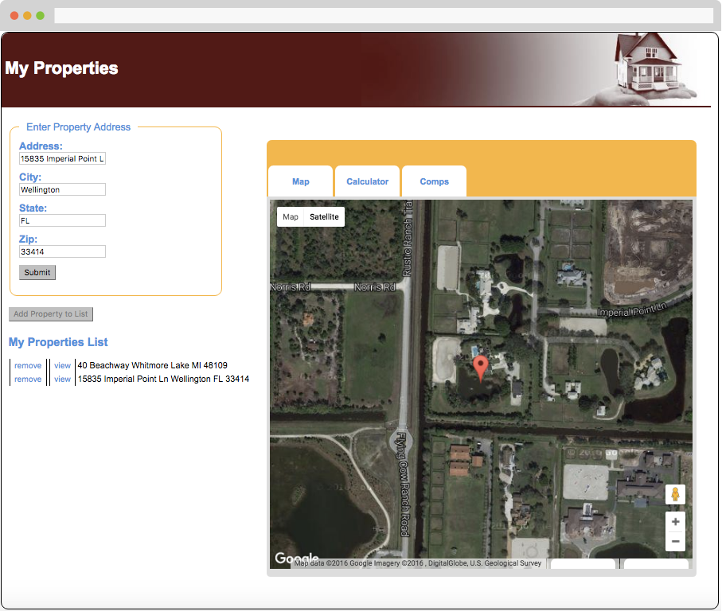
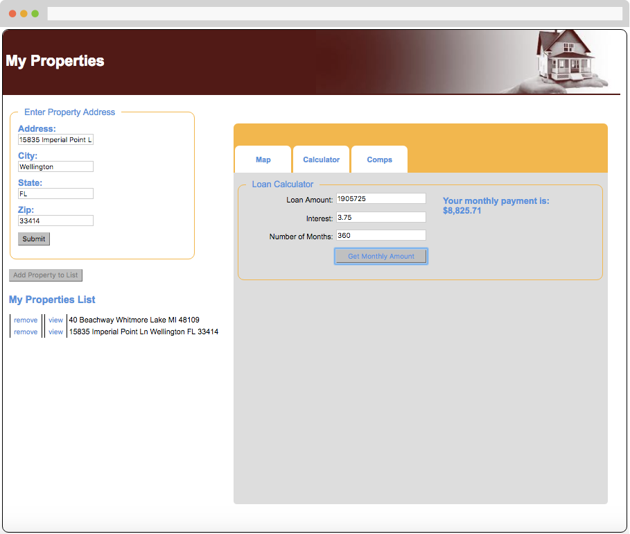
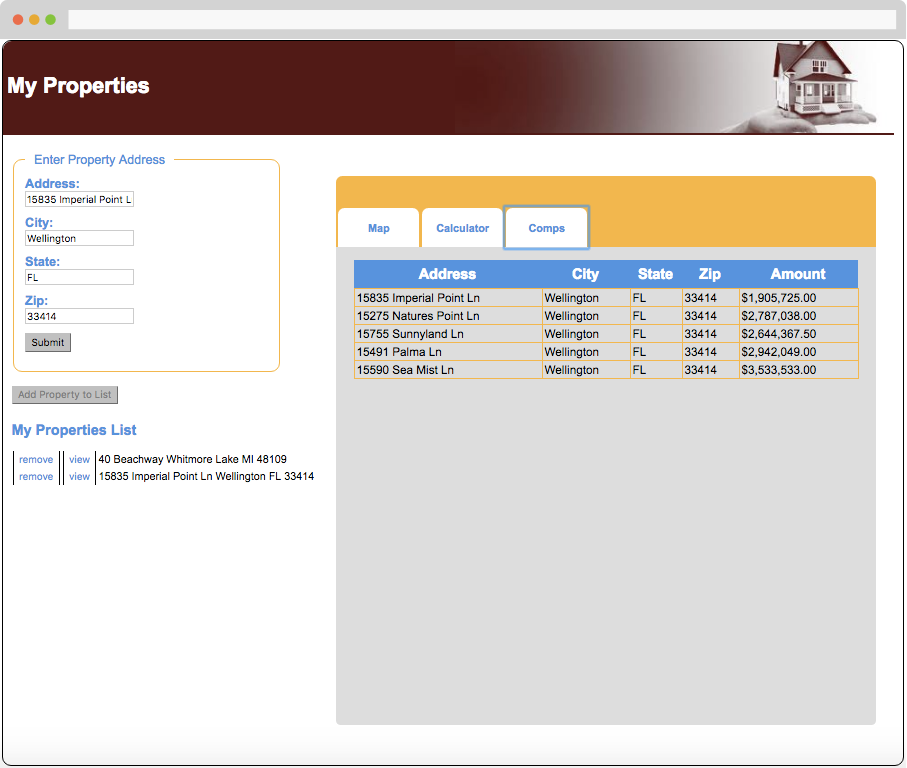

This application allows a user to search for real estate and view a map of the property, integrated using the Google Maps API.

Map of Property
The user can also estimate a monthly mortgage payment using the calculator.

Mortgage Calculator
And additionally, comps for the property van be viewed, integrated using the Zillow API.

List of Comps and Value
Findings from User Testing
The app was coded to specifications provided to me, and while it’s relatively simple and straightforward to use, I did some user testing and discovered a few improvements that could be made (as well as a few bugs):
In the loan calculator, the “Loan Amount” field should be filled in automatically based on the estimated value of the property returned from Zillow, rather than requiring the user to remember the amount and entering it themselves.
A “Down Payment” field should be added below the loan amount field so the user can see the effect varying down payment amounts have on the monthly payment.
The loan term field (“Number of Months”) should ask for the mortgage length in years rather than months, since mortgage terms are usually expressed in years.
There should be an indication of which tab (Map, Calculator, or Comps) is currently active.
“Add Property to List” is a bit vague. Consider changing it to “Save Property to List,” or add a sentence quickly explaining the feature.
Throw an error message if the property can’t be found.